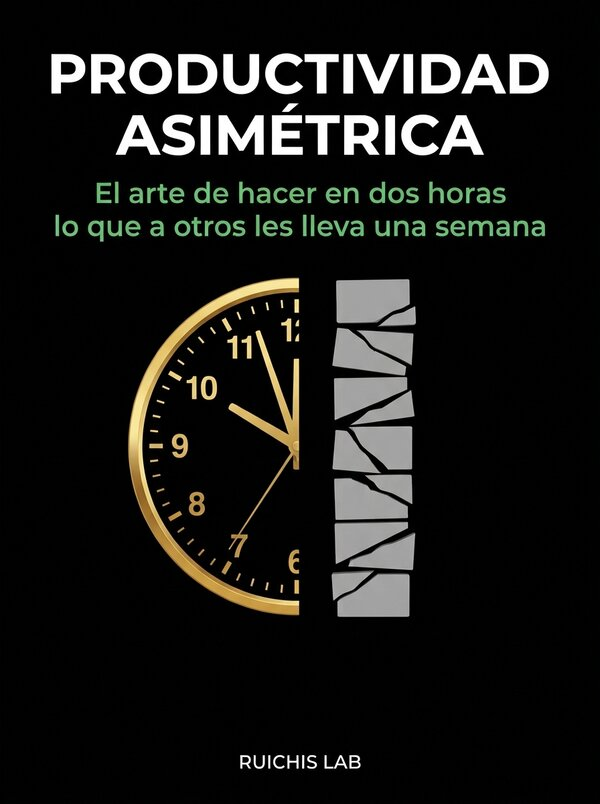

Productividad Asimétrica • Español • Kindle eBook & Tapa Blanda (5" × 8")
Productividad Asimétrica
El arte de hacer en dos horas lo que a otros les lleva una semana

Sinopsis
La mayoría de los sistemas de productividad tradicionales están diseñados para la era industrial: miden horas frente a una pantalla en lugar de impacto real. 'Productividad Asimétrica' expone cómo combinar aislamiento cognitivo profundo, apalancamiento tecnológico y diseño de sistemas para comprimir semanas de trabajo fragmentado en bloques de ejecución de dos horas.
Qué incluye esta edición
- Arquitectura de bloques de foco profundo de 120 minutos sin residuo atencional.
- Apalancamiento asimétrico mediante automatización, plantillas modulares y flujos de IA.
- Eliminación sistemática del 'teatro de la productividad' y la fricción operativa.
- Edición en Español disponible en Amazon (ASIN: B0HD2MY2HN).
Capítulo 1: La Mentira Lineal del Tiempo
«El trabajador promedio no está agotado por la complejidad de sus ideas, sino por la fricción de su entorno. Cada notificación, cada cambio de contexto y cada pestaña abierta cobra un impuesto neurobiológico que llamamos residuo de atención. La productividad asimétrica no consiste en correr más rápido dentro del laberinto; consiste en diseñar una catapulta fuera de él.»
Otros libros de Ruichis Lab
- Asymmetric Productivity — The Art of Doing in Two Hours What Takes Others a Week
- 100 Grandes Sopas de Letras de Cultura General — Colección Letras y Retos (Vol. I) • Historia • Ciencia • Arte • Geografía • Filosofía
- 100 Grandes Sopas de Letras de Biología — Colección Letras y Retos (Vol. II) • Célula • Genética • Botánica • Zoología • Evolución